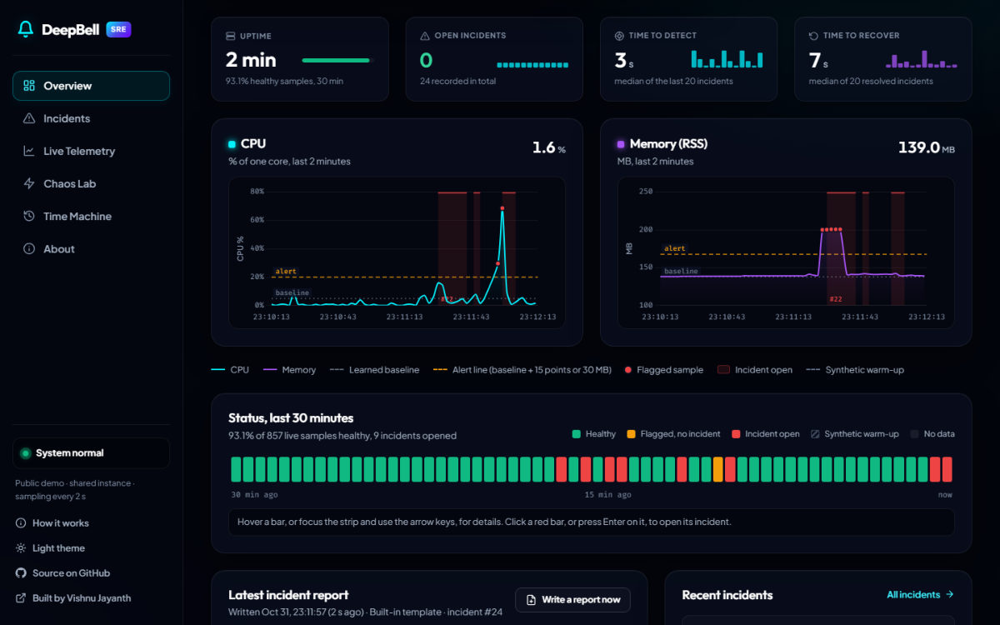
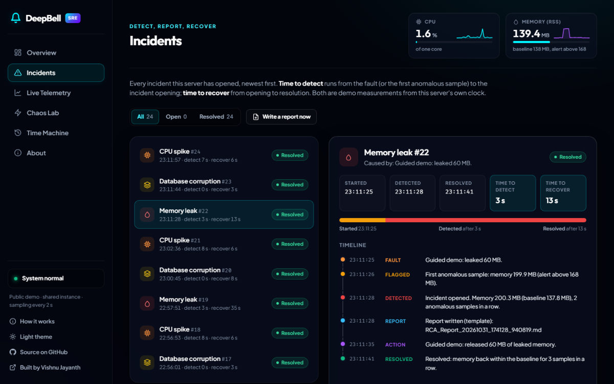
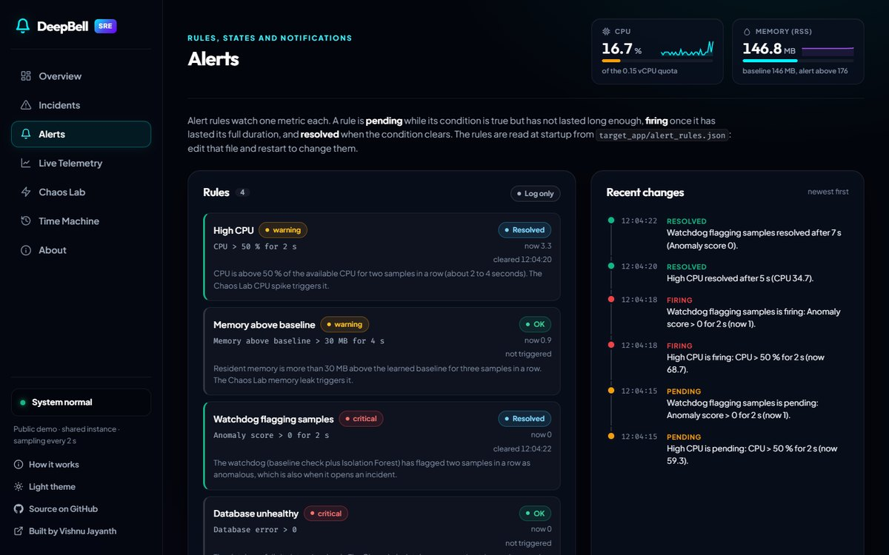

All workCase study 02 / 03
DeepBell
Catches what breaks in a running app, finds the likely cause and writes the incident report. A mini SRE lab in FastAPI: it detects anomalies in its own CPU and memory, fires alert rules, traces each incident to a likely cause, writes incident reports and restores from snapshots.
- Year
- 2026
- Built with
- FastAPI · LangChain · Docker

(01)The problem
Why it existsDeepBell runs the whole incident loop on one small service.
Background threads sample the service's own CPU and memory every 2 s. A baseline check plus an Isolation Forest flags anomalies and opens de-duplicated incidents, each incident gets a written report, and rolling SQLite snapshots give one-click rollback.
A capped fault-injection lab (the Chaos Lab) lets you break it on purpose, and every incident records when it started, was detected and resolved, so detection and recovery are timed.
(02)How it works
From the READMEDashed bracket: each step lands on the incident timeline, which times detection and recovery.
Sample. Every 2 s the watchdog reads the process's CPU % and resident memory with
psutiland stores the sample.Detect. The detector scores the sample. Two anomalous samples in a row open an incident; three normal ones close it. A query every 2 s catches a corrupted database.
Alert. Rules in
alert_rules.jsonare checked on every sample (pending, firing, resolved) and can notify a Slack or Discord webhook from a background queue, so the sampler never waits.Report. Opening an incident starts a report in a background thread: Google Gemini through LangChain when a key is configured, a built-in template otherwise.
Explain. Each incident gets one timeline (fault, alerts, anomaly, report, restore) and a likely cause with its evidence and a confidence level, labelled a heuristic.
Recover. Releasing the leaked memory lets the samples return to the baseline, which closes the incident; restoring a snapshot makes the database readable again.
(03)Key decisions
6 choices-
A baseline check before the Isolation Forest
A sample is a candidate only when CPU is at least 15 points above the baseline or memory at least 30 MB above it; an Isolation Forest (100 trees) must then confirm it. On its own, the forest flagged ordinary jitter.
-
One incident per fault
Two anomalous samples open an incident and three normal ones close it, with one incident and one report per fault kind at a time. While an incident is open its samples stay out of the baseline, so a held leak never becomes the new normal.
-
AI reports with a built-in fallback
Reports come from Gemini through LangChain when a key is set, and from a deterministic template otherwise or when the call fails. Every report is labelled with what wrote it.
-
Snapshots kept apart from incident history
The SQLite database is copied every 30 s when it changed (newest 10 kept, each integrity-checked). Incident history lives in a separate
metrics.db, so corrupting or rolling back the app database never rewrites it. -
Safe to run as a public demo
Every fault has caps and a cooldown: a CPU spike lasts 1 to 5 s, a leak holds at most 120 MB and is freed after 5 minutes, and a request during a cooldown gets a
429withRetry-After. Public demo mode turns off the crash fault and the API-key endpoint. -
Standard metrics, explainable causes
/metricsexposes the same signals in Prometheus format (incidents, detection and recovery times, faults, alerts), with a Docker Compose stack and a provisioned Grafana dashboard. The likely cause comes from simple rules, such as a matching fault within 10 s of the first anomalous sample, and never claims more certainty than its evidence.
(04)Proof
Tests · CI · stack- pytest tests, no network, Gemini stubbed
- 144
- CI on Python 3.11 and 3.12, with a Docker build
- Passing
- between samples of its own CPU and memory
- 2 s
The tests use temporary directories, disable the background threads or drive them with a fake clock, and replace the Gemini call with stubs. Measured on a laptop, in six runs of the guided demo (method in the README), the leak was detected 2 to 4 s after it was injected and resolved 10 to 13 s after detection (demo measurements on a laptop, not production numbers). Alert rules run on a fake clock against a fake webhook, and end-to-end tests follow a real memory leak from the fault to the alert, incident, likely cause, report and metrics. A seeded benchmark of the real detector (20 jitter streams, 30 runs per fault, method in the README) found 0 false incidents in 3.3 simulated hours, 4 s detection and 100% recovery (p95 6 s). CI runs
- Python 3.11, 3.12
- FastAPI
- Uvicorn
- SQLite
- psutil
- scikit-learn
- NumPy
- LangChain
- Google Gemini API
- Jinja2
- Chart.js
- Prometheus
- Grafana
- pytest
- Ruff
- Docker
- GitHub Actions
(05)How it was built
Software development lifecyclePlan. Requirements come from the major-project proposal. Static-threshold monitoring only alerts, so recovery is slow and root causes need manual log reading.
Design. One FastAPI process with a module per job: detection, incidents, snapshots, alert rules and correlation. Incident history has its own SQLite file, so a rollback never rewrites it.
Build. Pinned dependencies, Ruff lint and format checks, and pull requests since October 2026.
Test. 144 tests with a fake clock and a stubbed Gemini. End-to-end runs inject real faults, and CI smoke-tests the Docker image in public demo mode.
Deploy. Docker on Render in public demo mode. A merge to
maindeploys only after the checks pass, and Render watches/healthz.Maintain. Prometheus metrics, a Grafana dashboard for local runs, and in-app alert rules that move through pending, firing and resolved.
Done: an automated acceptance check ran the main user tasks on the live demo at phone and desktop sizes, and an accessibility scan (axe-core) was fixed to zero violations, both on 2026-11-09. Not done yet: testing with real users and a staging environment. Latest change, taken through every stage: a dependency scan found 48 known advisories in the runtime pins. They were upgraded (FastAPI, LangChain, scikit-learn, Jinja2 and others) with all 143 tests passing, and OSV.dev now reports none. The fix was made on a branch, tested, merged through a pull request after CI passed, and deployed. Full SDLC write-up
(06)Screenshots
From the repository



(07)Limitations
Honestly- It monitors only itself, on two signals (CPU and resident memory). It is a practice lab for incident response; it does not replace a monitoring tool.
- Fixed minimum deviations (15 CPU points, 30 MB), so smaller spikes and slow leaks are deliberately ignored.
- Snapshots are not point-in-time recovery: you can restore one of the last 10, taken at most every 30 s, and a rollback loses whatever changed since.
- No authentication. Public demo mode disables the dangerous endpoints and caps the rest, but any visitor can inject the capped faults.
- Single worker. Open incidents, cooldowns and leaked memory live in one process, and the measured times say nothing about a production system.
- Alerts and causes are simple. Rules are read at startup and alert history lives in memory; the likely cause sees only injected faults, CPU, memory, alerts and the database check, at 2 s resolution.
A modular pipeline that ingests raw XML invoices, validates them with deterministic rules, flags duplicates and routes doubtful ones to a review queue, with an experimental ML risk score and a vendor directory.